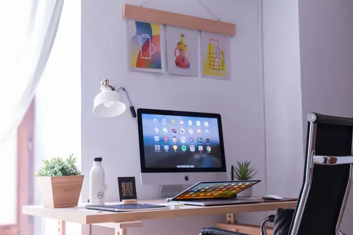

4 conseils pour garder son bureau propre bien rangé
Comment garder son bureau propre au Maroc
On adore le répéter mais chez HVNET NETTOYAGE societe de nettoyage casablanca , nous sommes des grands fans des bureaux bien aménagés ! Nous visitons chaque année des dizaines de locaux de start-up, d’agences ou bien d’entreprises. plus traditionnelles et nous ne sommes pas prêts de nous arrêter.
A travers ces visites, nous nous sommes rendus compte que garder son bureau bien rangé n’est pas une chose facile ! En effet, on s’est tous déjà retrouvé en fin de journée face à un véritable champ de bataille. sans savoir comment y mettre de l’ordre et surtout sans avoir la volonté de tout ranger avant de rentrer chez soi !
Pour garder son bureau propre en toutes circonstances, HVNET NETTOYAGE societe de nettoyage vous propose donc de découvrir 4 astuces qui vont changer votre vie au travail et améliorer votre productivité !
Ce que vous allez apprendre dans cet article
Limiter les fournitures de bureau et apprendre à trier
Pour bien commencer votre rangement, votre première tâche est d’effectuer des changements simples comme par exemple limiter les crayons ou les stylos que vous possédez sur votre bureau.
Il est vrai qu’il est agréable de disposer d’un grand nombre de crayons de couleurs différentes mais demandez-vous si ces outils de travail sont réellement nécessaires à vos tâches quotidiennes ? Avez-vous vraiment besoin de ces 4 ou 5 stylos qui se promènent sur votre bureau ?
Pour ceux qui auraient du mal à trier, investissez dans de jolis pots à crayon pour ranger vos stylos et autres fournitures de bureau. Cet investissement vous permettra de commencer à organiser votre bureau facilement.
Les bureaux sont également souvent envahis de papiers, factures, notes et Post-it divers. Apprenez à trier ces documents et à jeter au fur et à mesure pour ne pas finir la journée avec une pile de papier sur votre poste de travail. Pour cela prenez un peu de temps (3 minutes tout au plus), chaque jour pour faire du tri. Si cela vous paraît compliqué, pensez à vous poser ce type de questions : En ai-je réellement besoin ? Est-ce que cela peut encore me servir ? Cela vous permettra de trier plus facilement et rapidement. Si l’idée de trier vous fait peur, pas de panique, le tri est un sport qui peut être pratiqué par tous ! Mais comme chaque sport, un entraînement s’impose. Il n’est donc pas trop tard pour commencer à s’exercer !
Investir dans des rangements pratiques
Ensuite, il faut savoir que le manque de rangement peut également favoriser le désordre. Il est donc important de ne pas lésiner sur les range-revues ou encore les boîtes qui sont des solutions anti-désordre radicales.
Entre une multitude de feuilles de papier éparpillées partout et quelques rangements faits pour les rassembler, la différence est claire et nette. Vous devez garder le contrôle sur les éléments qui composent votre espace de travail. Il ne faut donc pas avoir peur d’investir dans divers rangements.
Voici une petite liste des rangements professionnels qui pourraient vous intéresser :
Méthodes symple du rangement des bureaux
HVNET NETTOYAGE societe de nettoyage casablanca ,expert en management du temps, a d’ailleurs mis l’accent sur l’organisation du bureau comme premier élément pour apprendre à manager son temps. Dans leur étude, il ont mis en avant l’importance de centraliser vos endroits de rangements avec, pour chacun d’entre eux, une fonction bien précise.
Ainsi, vous pouvez vous lancer dans un étiquetage de vos rangements bien précis. Par exemple, lorsque vous souhaitez ranger des documents qui ne sont pas financiers, utilisez un système alphabétique simple.
Vous pouvez utiliser ce qui vous semble le mieux mais je vous conseille des boites de rangement pour dossier. Je vous propose d’en acheter 13 et d’y mettre deux lettres de l’alphabet pour chacune d’entre elles. Si vous n’avez pas assez de place, vous pouvez regrouper les lettres W, X, Y, Z, souvent moins utilisées en entreprise.
Des bannettes de bureau jaunes et vertes
Ce système de rangement est très pratique pour la gestion de clients, des factures ainsi que de vos projets. Si vous avez beaucoup de documents clients, vous pouvez en créer un deuxième rien que pour vos clients.
Si vous devez tenir une comptabilité et que vous devez conserver des exemplaires papiers. je vous encourage à mettre en place le même système avec une boite de rangement par dates.
Vous l’avez compris, il est important de choisir le mode de rangement qui vous correspond au mieux. Il n’y a pas de règle, à chacun son rangement !
Dématérialiser vos documents
Pour garder son bureau propre, n’hésitez pas également à dématérialiser vos documents. De plus en plus de fournisseurs ou d’organisations proposent par exemple de vous envoyer des factures en format pdf. C’est donc un bon moyen de faire de la place facilement et à moindre coût.
Pour stocker ces documents parfois sensibles, des coffres fort numériques existent et sécurisent vos données sur des serveurs sécurisés.
Des lingettes à portée de main et du matériel de nettoyage
Pour finir, il est important de favoriser une propreté irréprochable. Nous vous conseillons donc de conserver un peu de matériel d’entretien à portée de main.
Un chiffon et du produit ou quelques lingettes peuvent facilement trouver leur place dans un tiroir de votre bureau.
En les ayant à proximité, vous serez plus facilement amené à nettoyer régulièrement votre plan de travail. Un petit coup de lingette chaque jour et votre espace de travail ne sera que plus agréable pour vous. N’oubliez pas la propreté avant tout !
Si vous avez un aspirateur ou un nettoyeur vapeur à disposition , c’est encore mieux pour garder votre poste de travail parfaitement propre !
Alors prêt à garder votre bureau propre et en ordre ?
Grâce à toutes ces astuces, votre bureau devrait rester propre et bien rangé. Travailler dans un espace de travail ordonné vous permettra d’optimiser votre productivité et de vous sentir mieux. Maintenant c’est à vous de jouer !
Envie de rendre vos bureaux incroyables ?
Notre societe de nettoyage casablanca , HVNET NETTOYAGE, propose des éléments de décoration originaux et du nettoyage de bureau coloré pour mieux aménager vos locaux.
Pour le nettoyage Résidentiel et Commercial
Notre personnel est formé pour nettoyer tout ce dont vous avez besoin !